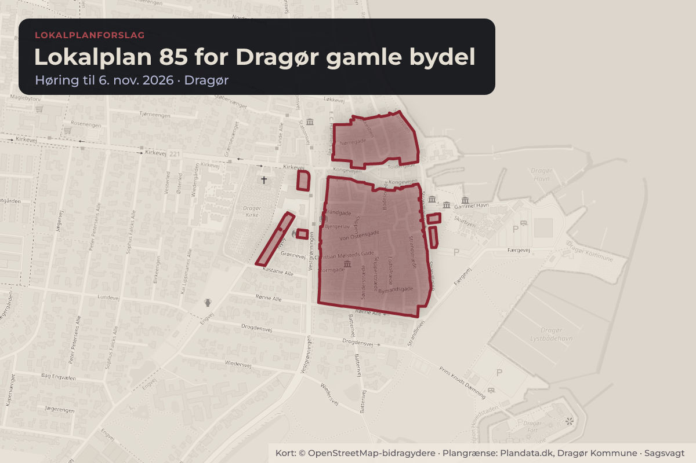
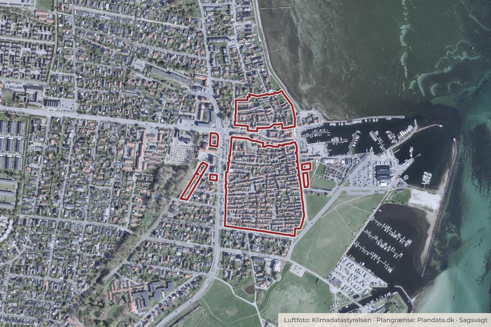

Besluttet 13. august, By-, Miljø- og Klimaudvalget, Dragør
Godkendelse af forslag til Lokalplan 85 for Dragør gamle bydel
: BY-, MILJØ- OG KLIMAUDVALGET DEN 13-08-2026 Anbefales over for ØU/KB. Sagsfremstilling: I november 2024 blev det besluttet at igangsætte revision af lokalplan 25 for Dragør gamle bydel.

Kort: © OpenStreetMap-bidragydere. Plangrænse: Plandata.dk, Dragør Kommune.

Har du et billede fra Lokalplan 85 for Dragør gamle bydel? Send det til os
Kort fortalt
- Hvem
- By-, Miljø- og Klimaudvalget, Dragør Kommune
- Hvornår
- Torsdag 13. august 2026
- Status
- Besluttet. Lokalplanen blev drøftet på By- Klima og Erhvervsudvalgets møde i april 2026.Beslutningen er forkortet her. Læs hele beslutningen
Læs hele sagen Kommunens egen tekst
Beslutning
: BY-, MILJØ- OG KLIMAUDVALGET DEN 13-08-2026
Anbefales over for ØU/KB.
Sagsfremstilling:
I november 2024 blev det besluttet at igangsætte revision af lokalplan 25 for Dragør gamle
bydel. På baggrund af administrative erfaringer og juridisk vurdering af bestemmelserne, har
der været behov for at præcisere bestemmelserne fra lokalplan 25 sådan, at en bevarende
lokalplan for området igen kan håndhæves efter intentionerne.
Formålet med lokalplanen er fortsat at bevare og fastlægge bestemmelser, der sikrer, at
Dragør gamle by udvikles med afsæt i den lokale tradition for byplan og byggeskik.
I det reviderede forslag til en bevarende lokalplan er det præciseret, hvad der kræver en
ansøgning, og en række bestemmelser i afsnittet om husenes udformning og udseende er gjort
mere detaljerede. Lokalplanens bestemmelser er suppleret med opdaterede vejledninger og
tegninger, der skal være en hjælp til borgerne i forbindelse med ønsker om at istandsætte,
vedligeholde eller bygge om. Eksempelvis har der vist sig et behov for at uddybe, hvordan en
traditionel skorsten skal udføres og behov for nye tegninger fx af havedøre.
Der blev i forbindelse med opstart af lokalplanrevisionen afholdt et borgermøde i maj 2025,
hvor alle deltagere kunne komme med input. Der var der blandt andet forskellige holdninger til
kviste og tagvinduer både i forhold til antal og størrelse samt forskellige ønsker til havedøre.
Derudover var der mange forskellige holdninger til haver, herunder placering af udhuse,
mulighed for drivhuse, samt forskellige holdninger til belægninger, pergolaer og terrasser.
Den nye bevarende lokalplan 85 giver bl.a. mulighed for at isætte 6-stens tagvinduer, som ikke
er i støbejern grundet udviklingen inden for tilpassede tagvinduer til bevaringsværdige og
fredede huse. Den giver også mulighed for at indrette beboelse i udhuse under særlige
forudsætninger samt for et mindre drivhus. Som følge af nye tekniske behov er der tilføjet
bestemmelser om varmepumper og elladestandere. Det vil fremover ikke være muligt at få
gavlkviste på to sider og krav til en række bygningsdeles udformning, materialer og detaljer er
specificerede fx at døre og vinduer uden skæmmende metallister.
Med hensyn til lokalplanens opbygning er der lavet flere ændringer. Der er blandt andet indsat
en blå, forklarende hjælpetekst under de enkelte bestemmelser. Det er ønsket at gøre det
lettere at forstå de enkelte bestemmelser. Hertil er tegningerne, der tidligere var en del af
ordlisten, placeret i et særskilt bilag. Nogle af tegningerne er blevet opdaterede med flere
detaljer. Den del af redegørelsen, som omhandler bydelens historie, byplan og byggeskik, er
placeret som selvstændige bilag sammen med kalkvejledning, farvevejledning og ordliste, da
afsnittene er vigtige for at forstå hensigten med lokalplanen.
Dragør Bevaringsnævn har med sin rådgivende rolle for kommunalbestyrelsen været inddraget
i processen med udarbejdelse af lokalplanen og er kommet med bemærkninger løbende. De
har også haft mulighed for at se et tidligt udkast til lokalplansforslaget og deres bemærkninger
hertil indgik i administrationens behandling og udarbejdelse af lokalplansforslaget. Nævnets
notat med de centrale bemærkninger er vedlagt som bilag.
Lokalplanen blev drøftet på By- Klima og Erhvervsudvalgets møde i april 2026. Der blev af
administrationen foreslået enkelte mindre ændringer af formuleringsmæssig karakter samt en
tilføjelse om anvendelse af eksisterende murede udhuse til boligformål, hvis en række
forudsætninger kan opfyldes. Det er tilføjet i § 3.6 om ændret anvendelse.
Love/Regler:
Planloven.
Økonomi/Personaleforhold:
Ingen bemærkninger.
Kommunikation/Høring:
Der har været afholdt et borgermøde i maj 2025 og efterfølgende har interessenter budt ind
med ideer til indhold og ændringer, som har indgået i arbejdet.
Forslag til lokalplan 85 sendes i offentlig høring i otte uger. Efter endt høring bliver alle
bemærkninger fremlagt i forbindelse med den endelige vedtagelse af lokalplanforslaget.
Der vil blive afholdt et borgermøde i forbindelse med, at lokalplanen er i høring.
Relation til politikker:
Ingen bemærkninger.
BESLUTNINGSPROCES:
By- Miljø- og Klimaudvalget den 13. august 2026.
Økonomiudvalget den 20. august 2026.
Kommunalbestyrelsen den 27. august 2026.
Kilde: Dragør Kommune, By-, Miljø- og Klimaudvalget, referat fra mødet torsdag 13. august 2026, punkt 4. Læs den originale sag hos kommunen.